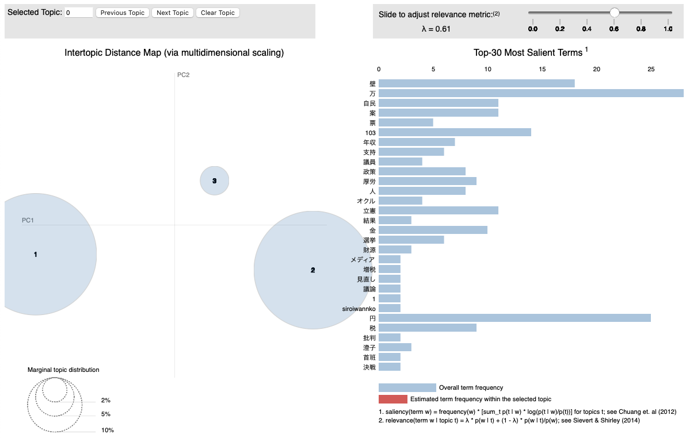
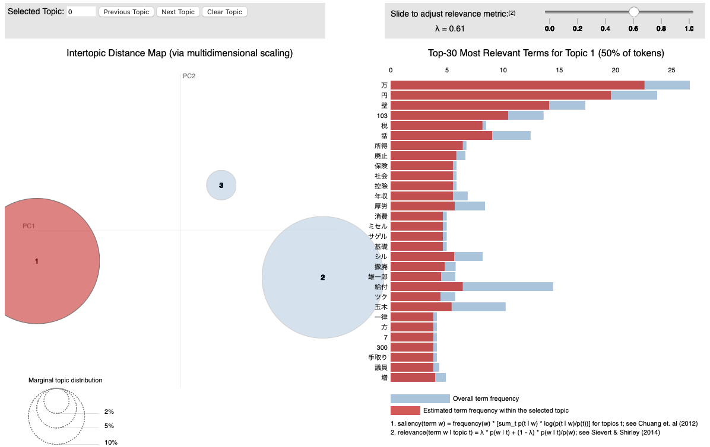
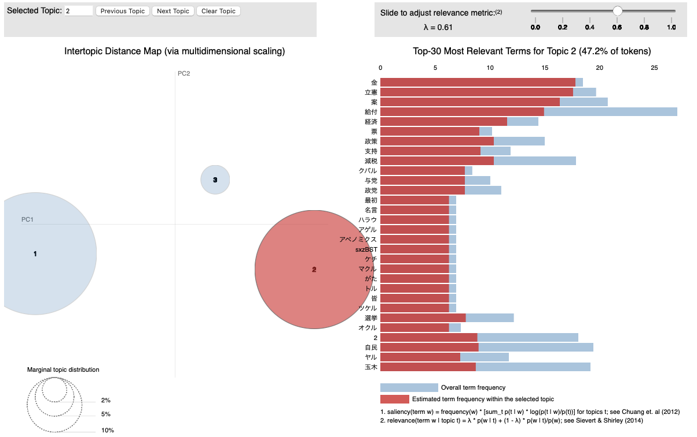

トピックモデル, n-gram, CLIP
トピックモデル
テキスト文書の集合から潜在的なトピック (話題) を抽出するために広く利用される古典的手法である, トピックモデルを利用してみましょう.
トピックモデルでは単語の分布を使って, 文章が何について話しているかを抽出します. ただし, 出力は単語の集合で表されるため, そのトピックが何に関する話題かは利用者が判断する必要があります.
- 例: トピックA: 「経済」「市場」「投資」 ← 経済に関するトピックと解釈できる
- 例: トピックB: 「ねこ」「いぬ」「ペット」 ← ペットに関するトピックと解釈できる
トピックモデルにもいくつかの手法がありますが, 最も一般的な実装手法の一つに LDA (Latent Dirichlet Allocation: 潜在的ディリクレ配分法) があります. LDA 以外にも PLSA (Probabilistic Latent Semantic Analysis) などがあります.
LDA では各文章をトピックの混合分布として表現します.
- 例: 文章1: トピックA 0.5, トピックB 0.4, トピックD 0.1
- 例: 文章2: トピックA 0.6, トピックE 0.3
LDA では, 各文書のトピック分布と各トピックの単語分布にディリクレ分布を使用します. ディリクレ分布は, 確率の分布に対する分布 (事前分布) として使われ, 特にトピックの混合率が異なる多様な文書集合に対応できます. この過程では「ギブスサンプリング」や「変分ベイズ法」といった推論手法を使い, 文書全体のトピックと単語の分布が収束するまで反復的に計算されます. 事前分布と事後分布の考え方や, マルコフ連鎖モンテカルロ法 (MCMC) の概要は, ベイズ統計学の基礎で扱います.
X (Twitter) API を用いたデータの取得
自然言語解析では, ワードクラウドの事例のように, まとまった文章を分析する場合もありますが, X (旧:Twitter) のつぶやきのように, 短い文章の集合を扱う場合もあります. ここでは, Twitter の API を利用して取得したつぶやきを分析してみましょう.
API という仕組みの説明と, X API による取得手順 (認証トークンの発行, 環境変数での受け渡し, 取得コード) は, X API による投稿の取得にまとめてあります (API 一般の説明はAPI とは). X API は 2026 年 2 月の改定で無料の取得枠が廃止され, 投稿 1 件 0.005 ドルの従量課金だけになりました. 研究で利用する人以外は, 取得済みの 50 件の投稿をまとめたデータをダウンロードして利用しましょう. このデータはX API で取得する posts.csv と同じ列構造 (query = 検索ワード, text = 投稿本文) なので, 以下のコードは自分で取得した posts.csv でもファイル名の変更だけで動きます.
トピックモデル実践
LDA によるトピックモデルを利用するためにライブラリ gensim と, LDA の可視化用のライブラリ pyLDAvis をインストールしましょう.
uv add gensim pyLDAvisimport と形態素解析のための関数を定義しておきます.
URL は上手く形態素解析できないので, URL を削除する関数も新たに定義しています.
import pandas as pd
import MeCab as mc
import re
from gensim.corpora.dictionary import Dictionary
from gensim.models import LdaModel
import pyLDAvis
import pyLDAvis.gensim_models as gensimvis
import pyLDAvis.gensim
def strip_CRLF_from_Text(text):
"""テキストファイルの改行,タブを削除し,形態素解析を実行
改行前後が日本語文字の場合は改行を削除する．
それ以外はスペースに置換する．
"""
# 改行前後の文字が日本語文字の場合は改行を削除する
plaintext = re.sub('([ぁ-んー]+|[ァ-ンー]+|[\\u4e00-\\u9FFF]+|[ぁ-んァ-ンー\\u4e00-\\u9FFF]+)(\n)([ぁ-んー]+|[ァ-ンー]+|[\\u4e00-\\u9FFF]+|[ぁ-んァ-ンー\\u4e00-\\u9FFF]+)',
r'\1\3',
text)
# 残った改行とタブ記号はスペースに置換する
plaintext = plaintext.replace('\n', ' ').replace('\t', ' ')
return plaintext
def mecab_wakati(text,word_types = ["名詞","動詞","形容詞","副詞"]):
#分かち書き
t = mc.Tagger()
#word_types = [String]で指定 ("名詞","動詞","形容詞","副詞")
node = t.parseToNode(text)
sent = ""
noun = [x for x in word_types if x == "名詞"]
others = [x for x in word_types if x in [ "動詞", "形容詞","副詞"]]
while(node):
if node.surface != "": # ヘッダとフッタを除外
word_type = node.feature.split(",")[0]
if word_type in noun:
sent += node.surface + " " # node.surface は「表層形」
if word_type in others:
sent += node.feature.split(",")[10] + " " # node.feature.split(",")[10] は unidic の「書字形基本形」(活用する前の形, 例: 当たり → 当たる)
node = node.next
if node is None:
break
return sent
def remove_urls(text):
# URLを検出する正規表現パターン
url_pattern = r'http[s]?://(?:[a-zA-Z]|[0-9]|[$-_@.&+]|[!*\\(\\),]|(?:%[0-9a-fA-F][0-9a-fA-F]))+'
# URLを空文字に置換して除外
return re.sub(url_pattern, '', text)データを読み込みます (このデータを取得した次の日に国民民主党の党首の不倫騒動があったので, そのつぶやきが取れていれば面白かったのですが, 残念です).
トークナイズ (形態素解析), 削除する語の指定, 削除までをまとめて行います. ここで指定している削除する語は, 一度結果を見たあとで追加したものです. 実際の分析では, 結果とコードを何往復かして, 調整する作業が必要になります.
形態素解析の前に remove_urls() を適用していることに注意してください.
#データの読み込み (X API で取得した posts.csv と同じ列構造: query, text)
df = pd.read_csv('data/tweets.csv')
#投稿本文の列を取り出す
akagi = df['text']
#トークナイズ
txt = [mecab_wakati(strip_CRLF_from_Text(remove_urls(x)),["名詞","動詞"]).split(' ') for x in akagi]
#削除文字の指定
stopwords = ['思う','言う','いう','いる','ある','こと']
txt = [[x for x in t if x not in stopwords] for t in txt]ワードクラウドで扱った「千葉商科大学の理念」は単一のテキストデータでしたが, 今回の分析の対象は 50 件のつぶやきです. このような複数のテキストを扱う際には, 前処理として出現頻度による単語の削除がよく用いられます. ほとんどすべてのテキストに出てくるような単語 (数字や副詞などが多い) は特徴を抽出する際には役に立たないので削除したほうが良い場合があります. 反対に, 出現回数がごく少ない単語, 造語や個人名なども削除したほうがよい場合があります.
実際の分析では, どの程度の頻度を基準とするかを結果を見ながら調整する必要がありますが, 今回は練習なので 2文書未満にしか出現しない単語 と, 全体の50%以上に出現する単語 を削除しています.
実装は dictionary クラスの filter_extremes() メソッドを利用しています.
#辞書の作成
dictionary = Dictionary(txt)
#出現がx文書に満たない単語と、y%以上の文書に出現する単語を極端と見做し削除する
x =2
y =0.5
dictionary.filter_extremes(no_below=x,no_above=y)
## LdaModelが読み込めるBoW形式に変換
corpus = [dictionary.doc2bow(x) for x in txt]
print(f"Number of unique tokens: {len(dictionary)}")
print(f"Number of documents: {len(corpus)}")
"""
Number of unique tokens: 220
Number of documents: 50
"""LDA では, 事前に抽出するトピック数を決めることができます. トピック数も実際には調整が必要ですが, 今回は決め打ちで 3 としています.
LDA の結果は pyLDAvis によって html 形式で出力されます.
#3トピックを抽出
num_topics =3
lda = LdaModel(corpus, id2word =dictionary, num_topics=num_topics, alpha=0.01)
#トピックごとに上位5単語を表示
df =pd.DataFrame()
for t in range(num_topics):
word=[]
for i, prob in lda.get_topic_terms(t, topn=5):
word.append(dictionary.id2token[int(i)])
_ = pd.DataFrame([word],index=[f'topic{t+1}'])
df = df._append(_)
print(df.T)
"""
topic1 topic2 topic3
0 金 万 増税
1 立憲 円 壁
2 案 壁 メディア
3 給付 103 自民
4 経済 話 結果
"""
#可視化
#PyLDAvisの実装
visualisation = pyLDAvis.gensim.prepare(lda, corpus, dictionary)
pyLDAvis.save_html(visualisation, 'result/LDA_Visualization.html')3 つのトピックはいずれも 103 万円の壁の話をしていますが, topic1 では立憲民主党の対案としての低所得者への給付の話題, topic3 ではメディアや自民党に対する批判などの話題が抽出されました. あまりはっきりしていませんが, もう少しつぶやきの数を増やすと分かりやすくなるかもしれません.
出力された LDA_Visualization.html をクリックするとブラウザ上で確認することができます.

左側には主成分分析による第 1 主成分, 第 2 主成分上にマッピングされたトピックの集合が可視化されており, 右側には全体のトピックにおける単語の分布が表示されています.
それぞれのトピックをクリックすることでトピックごとの単語の分布が表示されます.


右上のバーで調整できるラムダは, トピックモデルの結果を調整するためのパラメータです. ラムダの値が大きいほど, 他のトピックにも出現する一般的な単語を除外し, トピック内の単語の特徴を強調します. 値を変化させてどのようにトピックの分布が変わるかを確認してみましょう.
コード全体は以下のようになっています.
import pandas as pd
import MeCab as mc
import re
from gensim.corpora.dictionary import Dictionary
from gensim.models import LdaModel
import pyLDAvis
import pyLDAvis.gensim_models as gensimvis
import pyLDAvis.gensim
def strip_CRLF_from_Text(text):
"""テキストファイルの改行,タブを削除し,形態素解析を実行
改行前後が日本語文字の場合は改行を削除する．
それ以外はスペースに置換する．
"""
# 改行前後の文字が日本語文字の場合は改行を削除する
plaintext = re.sub('([ぁ-んー]+|[ァ-ンー]+|[\\u4e00-\\u9FFF]+|[ぁ-んァ-ンー\\u4e00-\\u9FFF]+)(\n)([ぁ-んー]+|[ァ-ンー]+|[\\u4e00-\\u9FFF]+|[ぁ-んァ-ンー\\u4e00-\\u9FFF]+)',
r'\1\3',
text)
# 残った改行とタブ記号はスペースに置換する
plaintext = plaintext.replace('\n', ' ').replace('\t', ' ')
return plaintext
def mecab_wakati(text,word_types = ["名詞","動詞","形容詞","副詞"]):
#分かち書き
t = mc.Tagger()
#word_types = [String]で指定 ("名詞","動詞","形容詞","副詞")
node = t.parseToNode(text)
sent = ""
noun = [x for x in word_types if x == "名詞"]
others = [x for x in word_types if x in [ "動詞", "形容詞","副詞"]]
while(node):
if node.surface != "": # ヘッダとフッタを除外
word_type = node.feature.split(",")[0]
if word_type in noun:
sent += node.surface + " " # node.surface は「表層形」
if word_type in others:
sent += node.feature.split(",")[10] + " " # node.feature.split(",")[10] は unidic の「書字形基本形」(活用する前の形, 例: 当たり → 当たる)
node = node.next
if node is None:
break
return sent
def remove_urls(text):
# URLを検出する正規表現パターン
url_pattern = r'http[s]?://(?:[a-zA-Z]|[0-9]|[$-_@.&+]|[!*\\(\\),]|(?:%[0-9a-fA-F][0-9a-fA-F]))+'
# URLを空文字に置換して除外
return re.sub(url_pattern, '', text)
#------------------------------------------------------------------
## ↑ ここまで,関数定義
## ↓ ここから,データ処理
#------------------------------------------------------------------
#データの読み込み (X API で取得した posts.csv と同じ列構造: query, text)
df = pd.read_csv('data/tweets.csv')
#検索ワードが「国民民主党」の投稿本文を取り出す (複数ワードを取得したデータでも動く形)
akagi = df[df['query'] == '国民民主党']['text']
#トークナイズ
txt = [mecab_wakati(strip_CRLF_from_Text(remove_urls(x)),["名詞","動詞"]).split(' ') for x in akagi]
#削除文字の指定
stopwords = ['思う','言う','いう','いる','ある','こと']
txt = [[x for x in t if x not in stopwords] for t in txt]
#辞書の作成
dictionary = Dictionary(txt)
#出現がx文書に満たない単語と、y%以上の文書に出現する単語を極端と見做し削除する
x =2
y =0.5
dictionary.filter_extremes(no_below=x,no_above=y)
## LdaModelが読み込めるBoW形式に変換
corpus = [dictionary.doc2bow(x) for x in txt]
print(f"Number of unique tokens: {len(dictionary)}")
print(f"Number of documents: {len(corpus)}")
#3トピックを抽出
num_topics =3
lda = LdaModel(corpus, id2word =dictionary, num_topics=num_topics, alpha=0.01)
#トピックごとに上位5単語を表示
df =pd.DataFrame()
for t in range(num_topics):
word=[]
for i, prob in lda.get_topic_terms(t, topn=5):
word.append(dictionary.id2token[int(i)])
_ = pd.DataFrame([word],index=[f'topic{t+1}'])
df = df._append(_)
print(df.T)
#可視化
#PyLDAvisの実装
visualisation = pyLDAvis.gensim.prepare(lda, corpus, dictionary)
pyLDAvis.save_html(visualisation, 'result/LDA_Visualization.html')